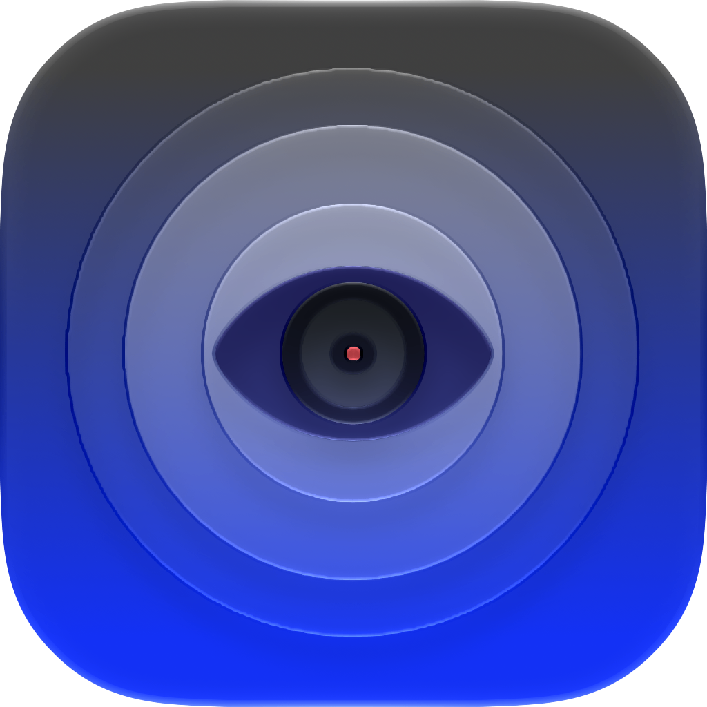
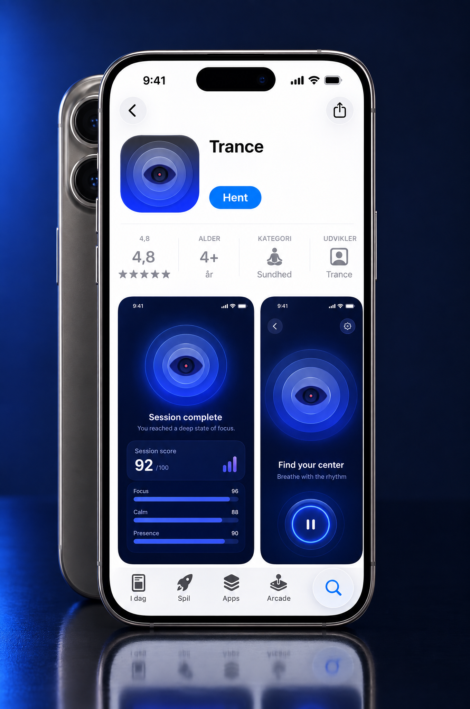

Øjensporing i realtid
Kameraet holder øje med dit blik og registrerer præcist, om du kigger på ankerpunktet. Mistede du fokus, minder stemmen dig blidt om at vende tilbage.

Trance trækker på virkemidler fra hypnose og tilpasser hver session til dig i realtid — med øjensporing fra kameraet og puls, HRV og hovedstabilitet fra dit Apple Watch. Bare fokuser på punktet, og lad stemmen guide dig.
Trance måler, hvordan du reagerer — og justerer hele oplevelsen derefter.
Kameraet holder øje med dit blik og registrerer præcist, om du kigger på ankerpunktet. Mistede du fokus, minder stemmen dig blidt om at vende tilbage.
Puls, HRV, hovedstabilitet og blinkrate bliver samlet til ét billede af, hvor afslappet du faktisk er — lige nu.
En dynamisk stemme ændrer sætninger, tempo og dybde ud fra din afslapningsscore. Jo mere rolig du bliver — desto langsommere og blødere bliver guiden.
Afstanden fra dit blik til ankerpunktet og din blinkrate oversættes til en konkret fokusscore — så du kan se din koncentration udvikle sig.
Det punkt, du fokuserer på, følger et langsomt vejrtrækningsmønster med længere og længere bølgelængde — præcis som en rigtig hypnoterapeut ville guide dig.
Efter hver session får du et grundigt resumé af dine scorer og parametre — og din historik ligger lokalt på din enhed, så du kan følge din udvikling over tid.
Fra stresset til afslappet — på ti minutter.
Vælg en session, og kig på ankerpunktet på skærmen. En stemme tager over og guider dig gennem hypnosen.
Øjensporing, puls, HRV og hovedstabilitet måles løbende — også hvis du ikke har alle sensorer tilgængelige.
Slapper du af, bliver stemmen langsommere. Taber du fokus, minder den dig blidt om at kigge på punktet igen.
Sessionen afsluttes roligt, og du får din afslapnings- og fokusscore plus ændringen i dine parametre.
"Træk vejret roligt ind … og ud"
En C++-motor med direkte adgang til TrueDepth-kameraet giver øjensporing, der virker både på iPhone og Mac.
Brugergrænsefladen er bygget i SwiftUI med HealthKit, WatchConnectivity og ARKit til sensor-data fra iPhone og Apple Watch.
Selve hypnose-motoren kører i C++ og tilpasser stemme, tempo og dybde ud fra dine målinger — hurtigt og præcist.
Vores egen øjensporer bruger kun billeddata som input, så den giver samme oplevelse på Mac og iPhone uden TrueDepth.
Dine sessioner og scores gemmes sikkert lokalt med SwiftData — din historik bliver på din enhed.
Download Trance og oplev hypnose, der tilpasser sig dig — øjeblik for øjeblik.
Download på App Store